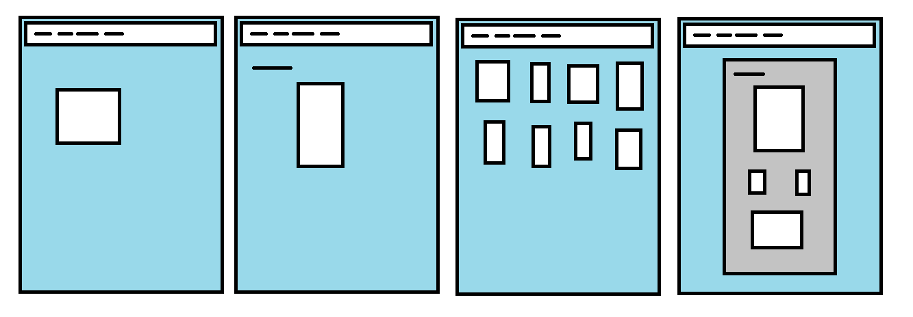

Weboldalterv
A tervezett elöször bonyolultabb lett, mint amit meg tudtam volna valósítani, ezért újra kezdtem és átterveztem az elképzeléseimet. Az első lépés a menüsor elkészítése volt, amit mind a 4 oldal használ majd. Az oldalak megalkotása egyessével történt. A kezdő lappal kezdtem ahol a nevem és a weblap címe szerepel. A második oldalon a tanulmányaim és az érdeklődési köröm található. A galériában látható képek a tanulmányaimhoz köthetőek.

Nehézségek
A első tervet túlbonyolítotam és belezavarodtam, így egyszerüsítenem kellett rajta. Az oldalak részeinek elhelyezése először nehézséget okozott, de a végére kezdtem beletanulni.
Felhasznált weboldalak
www.w3schools.com
www.youtube.com